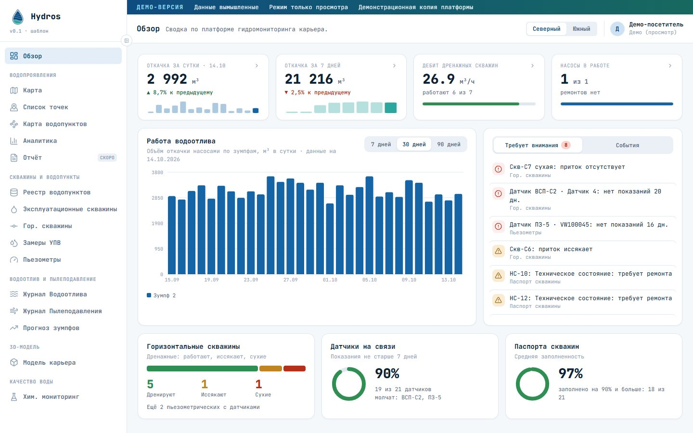

Water inflows on the map
Observation points on weekly pit plans: flow, status, photos, a heat map and the history of every point.
Hydros brings measurements of water inflows, wells, piezometers, dewatering and water chemistry into one digital log — with maps, a 3D model and analytics. Every company gets its own separate, protected installation.
Each company's data is stored separately and is never visible to others.
A short film on demonstration data — this is what working in the platform looks like.
Open the demonstration version: the same screens, maps, charts, well passports and 3D model your company would get. No installation or sign-up needed.

Instead of scattered spreadsheets and files — one system that keeps the history, does the calculations and shows the whole picture.
Observation points on weekly pit plans: flow, status, photos, a heat map and the history of every point.
A single register with well construction, groundwater level readings, flow rates and horizontal drainage wells.
Pore pressure from sensors, import of readings from files, calculation of the Hu coefficient, charts by well and by pit.
Sumps, pumps, meter readings, a water balance diagram and sump filling forecasts based on the volume curve.
Terrain from a DXF file, groundwater level contours, wells and sensors in space, vertical sections along any line — to see where the water is and how it changes.
Lab reports, permissible limits, ion balance, Piper and Stiff diagrams, a map by water composition.
A log of water-truck trips, water volumes and the link to dewatering sources.
Trends, period comparison, export to Excel and CSV, templates for bulk loading of readings.
You don't need to install or configure anything: we prepare the installation for your company.
You tell us about your tasks and pits. Together we choose the platform sections and the hosting option.
We deploy your system: its own address, its own database, your logo and name, your pits and role permissions.
We hand over logins and passwords to your staff, help load the first data, make backups and update the platform.
The platform is the same in both options; only the place where the data lives changes.
For those who want to start fast and not run servers.
For security policies where data must not leave the company perimeter.
No. Every company has a separate installation with its own database and its own file storage. There is no shared database, so there is simply nowhere for data to mix.
We create accounts from the list of employees you give us. There is no self-registration. An employee can change their own password, and access is switched off immediately when they leave.
No. The system works in a closed network. The only exception is map backgrounds (satellite imagery): they can be connected online, replaced with your own map server, or you can work on pit plans without a background.
Through Excel templates: water level readings, sensor readings, sump levels, lab reports. We can do the initial load together with you.
Yes: your name and logo, the list of pits, the coordinate system, the set of sections and role permissions are configured for your installation.
Backups of the database and files are made regularly and checked for restorability. New platform versions are rolled out without data loss — the database structure updates automatically.
The price depends on the set of sections, the number of users and the hosting option. Leave a request and we will prepare a quote for your company.
Leave a request — we will get in touch, tell you about the features and prepare a demonstration. We reply within one business day.